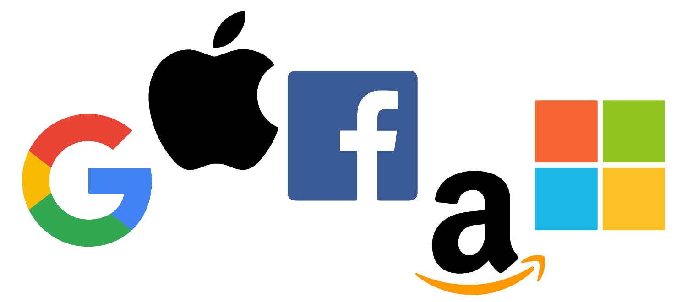
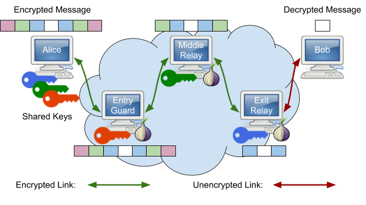

Technology is far from fully outplacing government/industry regulation. Big tech companies today are able the influence the outcome of elections and influence public opinion on a topic by targeting specific content to specific people through cookie tracking and local storage tracking. I do not think that we will reach a point where technology will overcome government regulation.

One of the seemingly most concerning developments is Artificial Intelligence (AI) and Machine Learning (ML) as they seem to pose a threat of "eliminating" or
"taking over" the human race. In reality this is far from the truth, having first hand experience in developing AI's I can say with confidence that ground breaking AI
will not happen anytime soon and will take a long time to develop.
An infamous thought experiment, Roku's Basilisk explains the danger of a superintelligent AI that
will infinitely punish those who do not do his bidding, or punish those who do not devote their lives to creating it because anything can happen in an infinite time, thus, mearly knowing about the Basilisk
causes one to be eternally punished unless they help creating the Basilisk.
The major players are Google, Amazon, Apple and Microsoft. 2.5 billion of the worlds devices run Android (owned by google), 1.4 billion devices run Apple and 1 billion devices run Windows (owned by Microsoft). Big players in the cybersecurity world are Symantec, who made Norton Antivirus and McAfee, who made McAfee Antivirus.
Some ways to avoid being surveilled by cookie tracking and browser tracking you can use secure browsers like TOR and Dissenter These browsers are based of Firefox and they use the TOR network to obscure your IP address. TOR stands for The Onion Router. Onion routing works by using multiple clients (Alice, Sally and John) and encrypts your message n (number of clients) times and gives 1 key to Alice, Sally and John. You (Bob) send a packet to Alice, the first client, then Alice uses the key you sent her and decrypts the first layer of encryption and then sends that to Sally who decrypts the second layer of encryption. Sally then sends that to John who decrypts the final layer and performs the web request. John then does the vice versa of what Bob does and sends the info back to Bob. This is secure because Alice only knows who you are and NOT the final destination of the request and John only knows Sally and not Bob. This secure system is very hard to break and requires NSA level computing power to monitor all TOR nodes, and guess timing of requests to identify who sent what request
